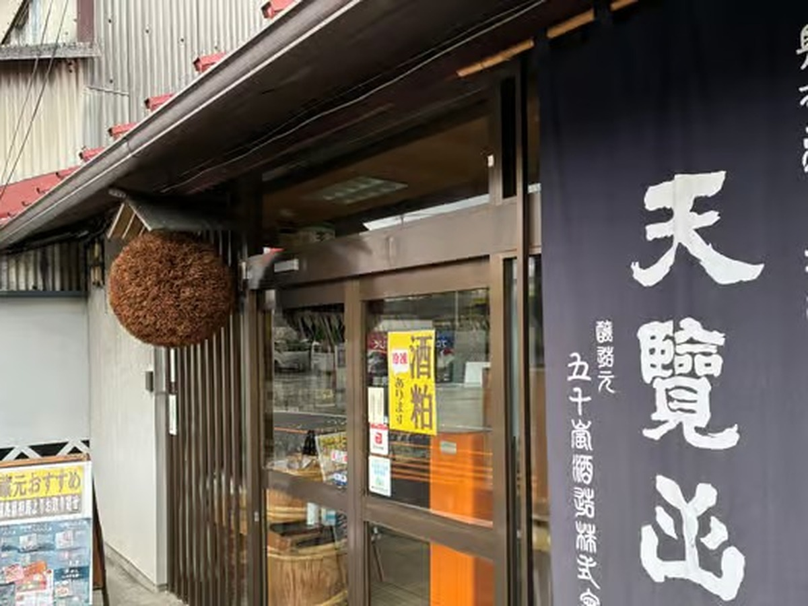

Hanno Sake Brewery & Fermentation Park Tour: One Hour from Tokyo

An hour west of Tokyo, past where the train lines thin out and the mountains start, the town of Hanno bundles three things you will not find together anywhere else in Japan: a 500-year-old Zen temple, a theme park built entirely around fermentation, and a sake brewery that uses mountain spring water.
This is a 5-hour small-group tour with a maximum of three guests, led by a local guide. It is not Asakusa, and there is no souvenir street or queue.
- Duration
- 5 hours
- Group size
- Small group, maximum 3 guests
- Price
- From ¥18,000 per person for the full tour (see the GetYourGuide listing for current options)
- Meeting point
- Hanno Station, north exit (Seibu Ikebukuro Line), as listed on GetYourGuide
- Lunch
- At the restaurant at OH!!!, paid directly by guests (about ¥2,500 per the listing)
- Optional
- A short hike up Mt. Tenran, which can be skipped
- Cancellation
- Free cancellation up to 24 hours before the start, per the GetYourGuide listing
What the day looks like
The day starts at Noinji Temple, a working Zen temple with a garden that has been kept for around five centuries. From there it is a short walk to OH!!! Fermentation Theme Park, a real theme park built around miso, soy sauce, sake and pickles. After lunch the tour goes to Igarashi Brewery, a working sake maker that brews with spring water straight from the mountain, for a tasting at its counter.
Why Hanno
Hanno has never been packaged for tourists: there is little English signage and no obvious reason for a first-time visitor to get off the train here. A local guide knows which sake to ask for and which parts of the theme park are worth the time. The full story is in One Hour from Shinjuku, Zero Tourists.
Prefer something shorter or sportier?
Hanno is also the setting of the anime "Encouragement of Climb". See our Hanno anime pilgrimage hike, a 3-hour walk to two summits.
Book this tour
Hanno Forest, Fermentation Park & Sake Tour — small group (max 3), English-guided, 5 hours.
Check dates & book on GetYourGuide →Some links on this page are affiliate links — booking through them supports this site at no extra cost to you.
Frequently asked questions
How do I get to Hanno from Tokyo?
Hanno Station is on the Seibu Ikebukuro Line, about one hour from Ikebukuro. The tour meets at the station.
Is sake tasting included?
Yes, the tour includes a sake tasting at Igarashi Brewery, per the tour description.
Is lunch included?
Lunch is at the restaurant at OH!!! and is paid for directly by guests.
How many people are in the group?
The tour is limited to three guests.